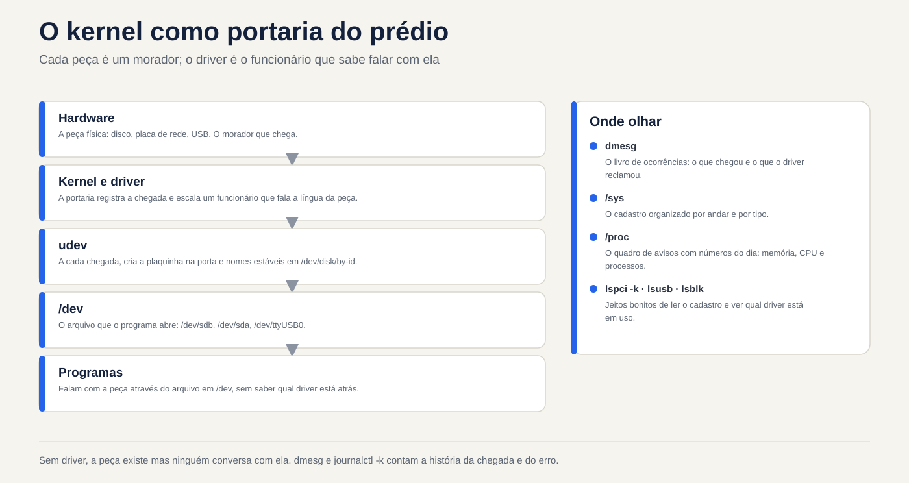
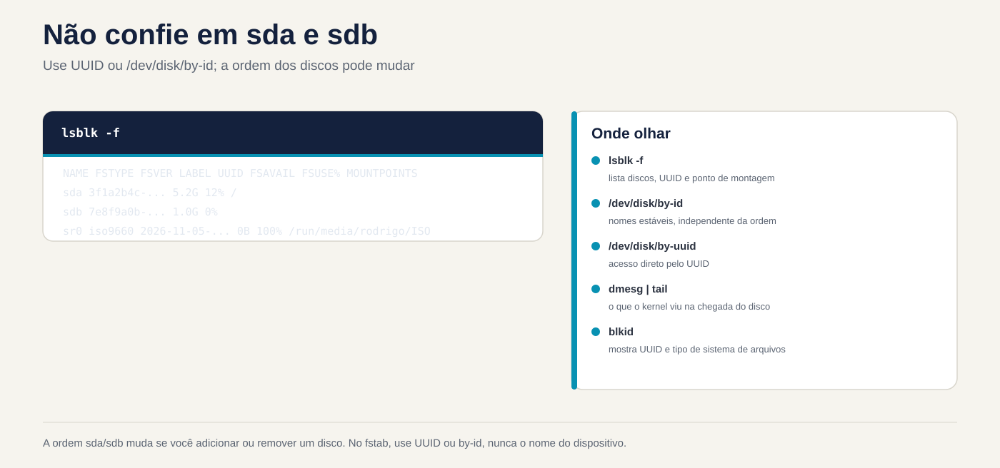

Lezione 5.1 · Hardware attraverso il kernel
Il kernel è ciò che comunica con l'hardware. Tutto ciò che vede, lo mostra in due luoghi: /proc e /sys. In questo corso imparerai come chiedere al kernel quale hardware è presente, quale driver si prende cura di ogni pezzo e cosa è successo quando qualcosa è stato collegato. In una VM, vedrai anche che l'"hardware" è quello che Proxmox ha inventato per questo.
Chiave di questa lezione:
lspci -k,lsblk,lsusb,dmesg(ojournalctl -k),/proc/cpuinfoe/proc/meminfo, l'idea di un driver e udev che crea i file in/dev. Il resto è approfondito.
| File | |
|---|---|
| Modulo | M5 · Hardware, kernel e virtualizzazione, lezione 1 di 3 |
| Quando | Settimana 9 |
| Settimana | 9 |
| Tempo | dalle 2h alle 2h30 |
| VM | rocky-lab (201) e debian-lab (202) |
| Prima | Istantanea m5a1-inicio in entrambi |
| Prova | LPIC 101.1 |
1 Riscaldamento
Rispondi senza cercare. Le risposte sono nella chiave di risposta.
- Se si collega un nuovo disco a un server connesso, è necessario riavviare affinché Linux possa vedere?
- Che cos'è un conducente, in una frase?
- Dove annota il kernel ciò che è accaduto dall'avvio: in un file di registro comune o altrove?
2 Perché è importante
| Situazione attuale | Cosa fai con questa lezione |
|---|---|
| Il cliente dice che "la scheda di rete è scomparsa" dopo un aggiornamento | lspci -k indica se la carta esiste e se un conducente l'ha presa in consegna |
| Hai aggiunto un disco a Proxmox e vuoi conoscerne il nome | lsblk e dmesg mostrano il nuovo disco, senza riavviare |
| Un server fisico è lento e sospetti che il disco | dmesg mostra errori I/O, reset del controller e settori danneggiati |
| È necessario inventariare memoria e CPU per 20 macchine | /proc/meminfo, /proc/cpuinfo e lscpu danno la risposta tramite script |
3 Modello mentale
Pensa al kernel come alla porta d'ingresso di un edificio:
- Ogni componente hardware è un residente. Quando arriva, il concierge registra il suo arrivo nel libro degli eventi, che è
dmesg. - Per ogni residente, la portineria assegna un dipendente che sa come parlare con lui: l'autista. Senza dipendente, l'ospite esiste, ma nessuno gli parla.
/sysè l'anagrafe organizzata di tutti gli abitanti, per piano e tipologia./procè la bacheca con i numeri del giorno: memoria, CPU e processi.- udev è l'impiegato che, ad ogni arrivo, mette un cartello sulla porta, cioè crea il file in
/dev, come/dev/sdb, e gli dà nomi stabili in/dev/disk/by-id.
I comandi lspci, lsusb e lsblk sono proprio dei simpatici modi per leggerlo record.


4 Elementi essenziali
/proc e /sys
Entrambi sono file system virtuali: non occupano disco e il kernel genera il contenuto quando lo leggi.
| Percorso | Mostra |
|---|---|
/proc/cpuinfo | Ogni CPU, il modello e i flag, come vmx o svm per la virtualizzazione |
/proc/meminfo | Memoria totale, libera e disponibile, cache e scambio |
/proc/cmdline | I parametri con cui è nato il kernel (4.4) |
/proc/partitions | I dischi e le partizioni conosciuti dal kernel |
/proc/interrupts e /proc/ioports | Interrupt e porte I/O che rientrano nel test |
/sys/class/net/ | Una cartella per scheda di rete |
/sys/block/ | Una cartella per disco |
/sys/bus/pci/devices/ | Un elemento per dispositivo PCI |
Scorciatoie che leggono questi file per te: lscpu, free -h e lsmem.
Ls*
| Comando | Elenco | La migliore opzione |
|---|---|---|
lspci | Dispositivi PCI: rete, disco, video | -k mostra il driver in uso; -nn mostra gli ID del produttore e del modello |
lsusb | Dispositivi USB | -t viene visualizzato nell'albero |
lsblk | Dischi e partizioni | -f mostra il file system e l'UUID |
lscpu | CPU | nessuna opzione |
lshw | Tutti | -short ne fornisce una sintesi; necessita di root e talvolta di installazione |
Se lspci o lsusb non esistono, installare i pacchetti pciutils e usbutils.
Cos'è un driver
Un driver è un codice del kernel che sa come comunicare con un tipo di hardware. Può essere integrato nel kernel o essere un modulo caricato quando appare l'hardware. 5.2 tratta dei moduli. In lspci -k la riga Kernel driver in use indica chi ha preso in consegna l'apparecchio. Se non appare, nessun driver ha preso il controllo e il dispositivo non funziona.
dmesg e journalctl -k
Il kernel memorizza i messaggi in un **ring buffer*. Quando l'anello si riempie, quelli più vecchi scompaiono.
sudo dmesg -T | less # -T: tempo leggibile
sudo dmesg -w # segui in diretta
sudo dmesg -l err,warn # solo errori e avvertimenti
journalctl -k -b # messaggi del kernel da questo avvio, tramite journal
journalctl -k -b -1 # dall'avvio precedente, se il journal è persistentejournalctl -k ha un vantaggio: memorizza i messaggi di avvio precedenti, cosa che dmesg non fa.
udev e /dev
Quando il kernel rileva un dispositivo, avvisa systemd-udevd. udev crea il file in /dev, modifica i permessi e crea i collegamenti stabili:
ls -l /dev/disk/by-id/ /dev/disk/by-uuid/ /dev/disk/by-path/
udevadm info /dev/sda # tutto ciò che udev sa sul disco
sudo udevadm monitor # mostra eventi dal vivoRegola pratica: nomi come sda e sdb dipendono dall'ordine in cui appaiono i dischi e potrebbero cambiare all'avvio successivo. In /etc/fstab e negli script, utilizzare l'UUID o by-id.
Rocky × Debian
| Articolo | Roccioso | Debian |
|---|---|---|
dmesg senza sudo | Di solito funziona | Rifiutato: kernel.dmesg_restrict = 1 |
lspci con installazione minima | Può mancare: dnf install pciutils | Può mancare: apt install pciutils |
| regole udev | /usr/lib/udev/rules.d/ (sistema) e /etc/udev/rules.d/ (tuo) | Uguale |
Ciò che è compreso nel test
LPIC 101.1 addebita la differenza tra /proc, /sys e /dev; a cosa servono udev e udevadm; i comandi lspci, lsusb, lsblk e dmesg; e il concetto di hotplug (il dispositivo entra con la macchina accesa) rispetto a coldplug (il dispositivo era già presente all'avvio). Amano chiedere dove si trovano le informazioni sull'interruzione: sono in /proc/interrupts.
5 Laboratorio guidato
Passaggio 0 · Istantanea e cartella
Sul nodo Proxmox:
qm snapshot 201 m5a1-inicio
qm snapshot 202 m5a1-inicioSu ciascuna VM:
mkdir -p ~/lab51 && cd ~/lab51Passaggio 1 · Inventario tramite /proc
Su entrambe le VM:
lscpu | head -20
grep -c ^processor /proc/cpuinfo
grep -m1 'model name' /proc/cpuinfo
free -h
grep -E 'MemTotal|MemAvailable|SwapTotal' /proc/meminfo
cat /proc/partitions
lsblk -fConfronta il modello di CPU dei due con quello del nodo Proxmox. Con il tipo di CPU host la VM vede lo stesso modello del processore fisico. Nota in ~/lab51/inventario.txt: CPU, memoria totale, dischi e partizioni.
Passo 2 · Who's who su PCI e USB
lspci
lspci -k | grep -A3 -iE 'ethernet|scsi|sata|virtio'
lsusb
lsusb -tVedrai i dispositivi con il nome Red Hat, Inc. Virtio: queste sono le parti virtuali offerte da Proxmox (QEMU), con driver virtio sul lato Linux. In lsusb, appare un QEMU USB Tablet: è il mouse della console noVNC.
Nota: quale driver si prende cura della scheda di rete e quale si prende cura del controller del disco?
Decidi 1
Nel passo successivo aggiungerai un disco da 1 GB a Debian-Lab, con esso acceso. Innanzitutto rispondi: cosa mostra lsblk subito dopo?
- A) Niente di nuovo: il disco appare solo dopo il riavvio.
- B) Un nuovo disco,
sdbad esempio, senza partizioni. - C) Un nuovo disco, già con una partizione formattata.
Selezionare un'opzione prima di procedere.
Passo 3 · Hotplug live
In debian-lab, aprire due sessioni SSH. Nella prima:
sudo udevadm monitor --udev --subsystem-match=blockNella seconda:
sudo dmesg -wTOra aggiungi il disco. Attraverso l'interfaccia Proxmox: VM 202, quindi Hardware, Add e Hard Disk, con bus SCSI, memoria vm-hdd e dimensione 1 GB. Oppure, nella shell del nodo:
qm set 202 --scsi1 vm-hdd:1Guarda le due sessioni: dmesg mostra il kernel che trova il disco, e udevadm monitor mostra l'evento add per udev. Fermarli entrambi con Ctrl+C e spuntare:
| Se hai selezionato | Risultato | Perché |
|---|---|---|
| A | Sbagliato | Il bus SCSI virtuale avvisa immediatamente il kernel: questo è hotplug |
| B | Capito bene | Il kernel vede il disco e udev crea /dev/sdb. Il nuovo disco arriva vuoto |
| C | Sbagliato | Nessuno partiziona o formatta da solo. Dipende da te, sull'M9 |
lsblk
ls -l /dev/disk/by-id/ | grep -v part
udevadm info /dev/sdb | head -30Conferma in base alla dimensione che il disco da 1 GB sia effettivamente sdb. Se è un altro nome, utilizzalo nel resto della lezione.
Per risolvere: il nuovo disco viene visualizzato senza riavviarsi e il nome sdX è solo l'ordine di arrivo. Il nome della stalla è in /dev/disk/by-id.
Decidi 2
Su entrambe le VM, come utente normale e senza sudo, eseguirai dmesg | tail -3. Cosa succede?
- A) Entrambi mostrano i messaggi.
- B) Entrambi rifiutano.
- C) Uno mostra e l'altro rifiuta.
Controlla prima un'opzione. Quindi eseguirli entrambi e anche sysctl kernel.dmesg_restrict.
| Se hai selezionato | Risultato | Perché |
|---|---|---|
| A | Sbagliato | Debian protegge l'anello del kernel dagli utenti ordinari |
| B | Sbagliato, nella maggior parte delle installazioni | Rocky di solito viene fornito con dmesg_restrict = 0 |
| C | Capito bene | Debian viene fornito con kernel.dmesg_restrict = 1 e Rocky solitamente con 0. Controlla il valore reale sulle tue VM |
Per risolvere: dmesg può rivelare indirizzi e dettagli utili a un utente malintenzionato. Ecco perché Debian lo limita. In uno script di monitoraggio, esegui con sudo o usa journalctl -k in un gruppo con accesso al journal.
Passo 4 · Passa attraverso /sys
ls /sys/class/net/
cat /sys/class/net/*/address
cat /sys/class/net/*/operstate
cat /sys/block/sdb/size # in settori da 512 byte
echo $(( $(cat /sys/block/sdb/size) * 512 / 1024 / 1024 )) MiB
cat /sys/block/sdb/queue/rotational # 1 = disco rotante, 0 = SSD o virtuale senza dirlo
readlink -f /sys/class/net/*/device/driverNota: i lsblk e ip link che già usi leggono esattamente questi file.
6 Interrompi e ripara
Farai in modo che il kernel "dimentichi" il disco di test e poi lo farai cercare di nuovo, senza riavviare. Questo è ciò che fai su un server fisico quando un nuovo disco non viene visualizzato.


Per prima cosa, controlla di nuovo con lsblk che sdb sia il disco da 1 GB e che non abbia nulla montato. Non eseguire mai questa operazione sul disco di sistema.
lsblk /dev/sdb
echo 1 | sudo tee /sys/block/sdb/device/delete
lsblk
sudo dmesg | tail -5Il disco non è più disponibile per Linux, sebbene sia ancora connesso alla VM. Ora, senza guardare la risposta qui sotto, prova a capire come mandarlo a cercare di nuovo. Suggerimento: il percorso è in /sys/class/scsi_host/.
La correzione:
for h in /sys/class/scsi_host/host*/scan; do echo "- - -" | sudo tee "$h" >/dev/null; done
lsblkI tre trattini significano "qualsiasi canale, qualsiasi destinazione, qualsiasi LUN". Il disco ritorna, a volte con un nome diverso. Pertanto, ancora una volta, gli script e fstab utilizzano l'UUID o by-id.
7 trappole
- Affidati a
sdaesdb. L'ordine può cambiare quando si avvia con un disco in più o in meno. Utilizzare l'UUID oby-id. - Penso che
dmesgcontenga tutto. L'anello ha una dimensione fissa e si spegne all'avvio. Per la cronologia, utilizzarejournalctl -k, con il journal persistente 3.x. - Dimentica
-kinlspci. Senza di esso, vedi l'hardware ma non il driver, che è proprio ciò che conta in un "la scheda è sparita". - Esegui
device/deletesul disco sbagliato. Il sistema perde il disco con tutto ciò che è montato su di esso. Confermare per dimensione elsblkprima. - Modifica file in
/usr/lib/udev/rules.d/. Il prossimo aggiornamento sovrascrive. Le sue regole vanno in/etc/udev/rules.d/. - Aspettatevi di vedere l'hardware fisico in una VM. All'interno della VM, vedi l'hardware virtuale offerto da Proxmox. Lo stato dei dischi fisici viene controllato nel nodo, non nella VM.
8 Quiz
- Qual è la differenza tra
/proce/sys, in una frase ciascuno? - Quale comando mostra quale driver ha preso il controllo della scheda di rete?
- Perché non usi
/dev/sdbin/etc/fstab? - In quale file sono in uso gli interrupt?
- Come visualizzare i messaggi del kernel dall'avvio precedente?
- Cosa fa udev quando il kernel rileva un nuovo dispositivo?
9 Cola
Conoscerlo a memoria
| Comando | Fare |
|---|---|
lspci -k | dispositivi PCI e il driver per ciascun |
lsusb / lsusb -t | Dispositivi USB, in elenco o albero |
lsblk -f | Dischi, partizioni, file system e UUID |
lscpu / free -h | CPU e memoria |
sudo dmesg -T / -w | Messaggi del kernel, con ora o in tempo reale |
journalctl -k -b / -b -1 | Messaggi del kernel dall'avvio corrente o precedente |
udevadm info /dev/X / udevadm monitor | Cosa sa udev da un dispositivo/eventi live |
/dev/disk/by-id, by-uuid | Nomi dischi stabili |
Da consultare
lspci -nn, lspci -v, lshw -short, lsmem, /proc/interrupts, /proc/ioports, /proc/dma, /sys/class/, /sys/bus/pci/devices/, /sys/block/*/queue/rotational, /sys/class/scsi_host/host*/scan, /sys/block/*/device/delete, /etc/udev/rules.d/, udevadm trigger, kernel.dmesg_restrict.
Flashcard
| Domanda | Rispondi |
|---|---|
/proc e /sys occupano il disco? | No: il kernel genera il contenuto al volo |
Chi crea i file in /dev? | udev (systemd-udevd) |
| Un nuovo disco in una VM connessa richiede un riavvio? | No: è hotplug |
| Dove sono le regole di amministrazione di udev? | /etc/udev/rules.d/ |
Perché dmesg fallisce senza sudo su Debian? | kernel.dmesg_restrict = 1 |
10 Lista di controllo e chiusura
- [ ] Ho eseguito l'inventario della CPU, della memoria e del disco utilizzando
/proce i comandils* - [ ] Ho trovato la scheda di rete e il driver del controller del disco
- [ ] Ho visto un disco attivarsi in
dmesge inudevadm monitor - [ ] Capisco perché
dmesgsi comporta diversamente in entrambi distribuzioni - [ ] Ho fatto in modo che il kernel dimenticasse un disco e lo cercasse di nuovo
- [ ] So perché i nomi
sdXnon sono utili per fstab
Ultimo esercizio, senza guardare la lezione: rimuovi il disco di test in modo pulito. Per prima cosa, all'interno di Debian-lab, fai in modo che il kernel lo rilasci:
echo 1 | sudo tee /sys/block/sdb/device/deleteQuindi, nell'interfaccia Proxmox, vai su VM 202, quindi Hardware, seleziona il disco scsi1, fai clic su Detach e poi su Remove su Unused Disk. Questo cancella il disco di test da 1 GB, che non ha nulla.
Riavvia e conferenza: riavvia entrambe le VM e controlla:
lsblk # solo i dischi originali
systemctl is-system-running # corsa
ls ~/lab51Termina snapshot, sul nodo Proxmox:
qm snapshot 201 m5a1-fim
qm snapshot 202 m5a1-fim11 Nella vita reale
Missione, sola lettura. Su un server reale che amministri, preferibilmente fisico, esegui semplicemente questi comandi, che non cambiano nada:
lscpu | grep -E 'Model name|^CPU\(s\)'
free -h
lsblk -o NAME,SIZE,TYPE,MODEL,ROTA,MOUNTPOINTS
lspci -k | grep -A3 -iE 'ethernet|raid|sas|nvme'
sudo dmesg -T -l err,warn | tail -20
journalctl -k -p warning -b --no-pager | tail -20Risposta: i dischi girano o gli SSD? La scheda di rete ha un driver in uso? Ci sono errori e avvisi del kernel relativi al disco, alla memoria o alla rete? Su un server fisico i messaggi con I/O error, reset o Machine Check meritano una conversazione con la persona responsabile. Non cambiare nulla da solo.
Diario: scrivi tre righe su ciò che hai imparato oggi e una domanda che ti è rimasta.
Domani, senza guardare:
- Nomina tre file da
/proce cosa mostra ciascuno. - Scrivere il comando che mostra il driver per ciascun dispositivo PCI.
- Spiega, in una frase, cosa fa udev quando arriva un disco.
12 Approfondisci quando vuoi
- Scrivi una regola udev in
/etc/udev/rules.d/che dia un nome fisso ad un disco o ad una scheda di rete. udevadm testeudevadm triggerper testare le regole senza collegare nulla.- Stato fisico dell'hardware:
smartctl(pacchettosmartmontools),rasdaemone messaggi EDAC di memoria. lshw -htmlper un inventario a pagina intera.- Coldplug: come udev rielabora i dispositivi che erano già presenti all'avvio.
In DeepTutor: !explica /proc, /sys e /dev, !feynman o que o udev faz, !quiz hardware pelo kernel.
Risposta commentata
Riscaldamento
- In generale, no. SAS, SATA hotplug, NVMe supportato e dischi virtuali vengono visualizzati all'accensione della macchina. Se non compaiono, è possibile richiedere una nuova scansione tramite
/sys. - Un driver è il codice del kernel che sa come comunicare con un tipo di hardware.
- In un anello di memoria del kernel, letto da
dmesg. La rivista ne conserva anche una copia, che injournalctl -ksi legge.
Quiz
/procmostra i processi e i numeri del kernel, come memoria e CPU./syspresenta dispositivi e autisti in modo organizzato, per autobus e per lezione.lspci -k, in linea Driver del kernel in uso.- Perché il nome
sdXdipende dall'ordine in cui appaiono i dischi e può cambiare. L'UUID e ilby-idnon cambiano. - Nel
/proc/interrupts. journalctl -k -b -1, purché il giornale sia persistente.- udev riceve l'evento del kernel, crea il file del dispositivo in /dev con i permessi corretti, aggiunge collegamenti simbolici stabili come /dev/disk/by-id ed esegue eventuali regole di corrispondenza.